How to guid
Getting Bisq
Getting started with Bisq
Making a trade
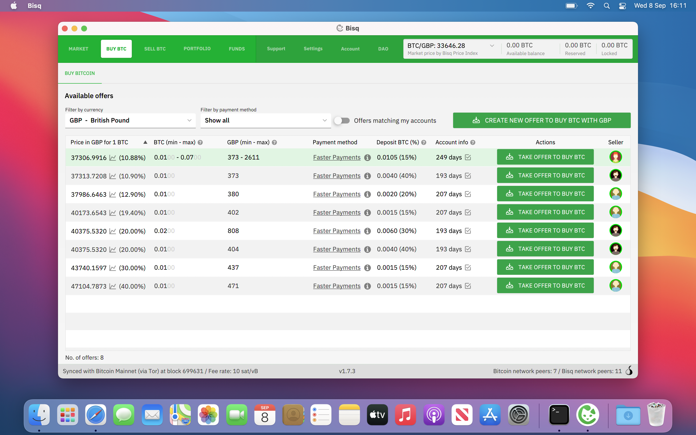
First go to https://bisq.network/downloads/ and download the corresponding files for your computer, this guide was done on a mac so I'll download the .dmg file and the corresponding PGP signature.
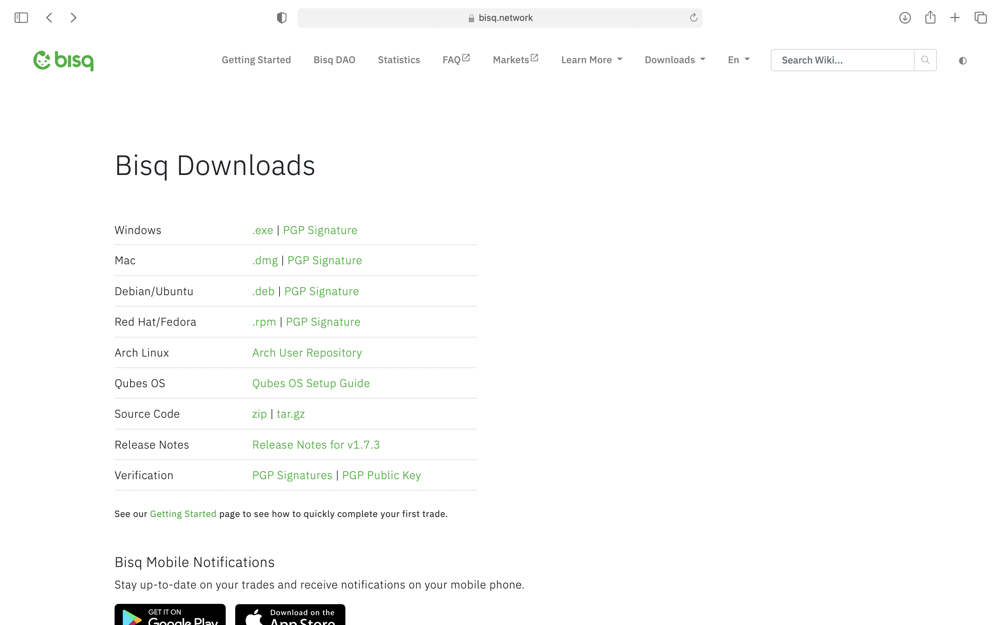The next few steps are to ensure that the .dmg file is authentic. Open the terminal app and run (copy and paste the following line into the terminal window and hit enter)
ruby -e "$(curl -fsSL https://raw.githubusercontent.com/Homebrew/install/master/install)"
hit enter, type your password if prompted and wait for homebrew to install.
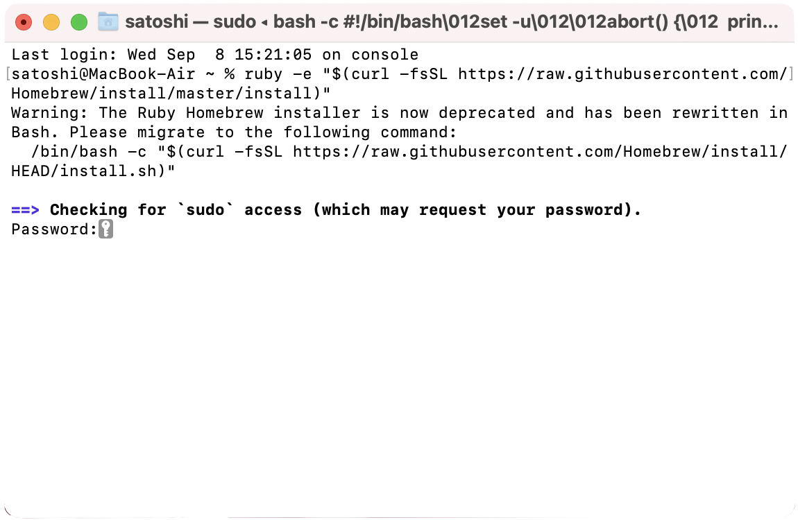If you get the warning message /opt/homebrew/bin is not in your path follow the instructions under "Next steps". Then run the two lines separately
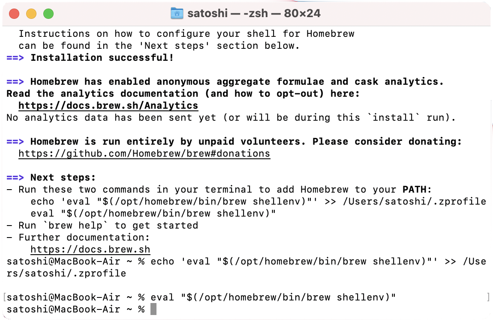brew install gnupg
curl https://bisq.network/pubkey/29CDFD3B.asc | gpg --import
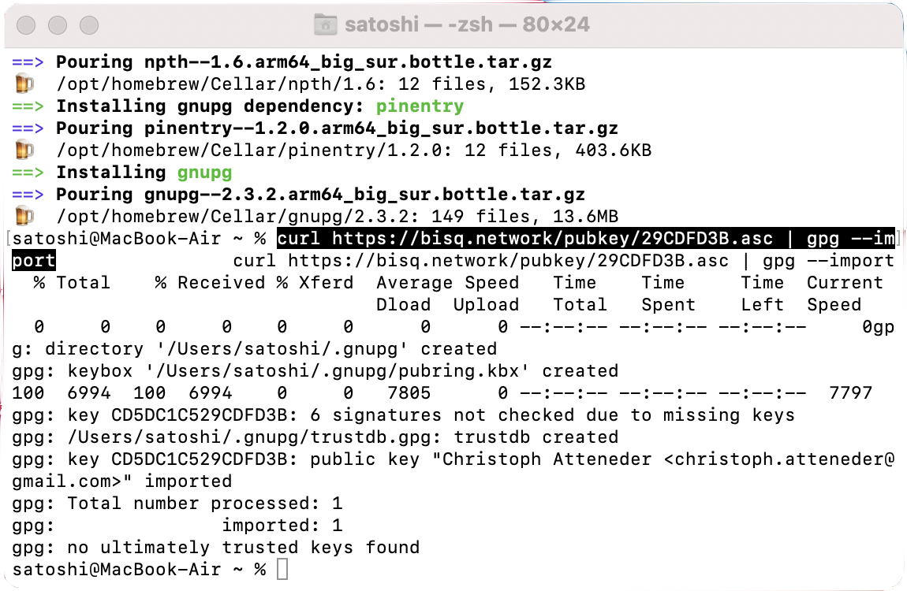The previous command imports the public key of Christoph Attender (ripcurlx). His public key ID is 29CDFD3B and fingerprint is CB36 D7D2 EBB2 E35D 9B75 500B CD5D C1C5 29CD FD3B, which you can verify throough commits on github and on keybase, now run
cd Downloads
gpg --digest-algo SHA256 --verify Bisq-1.7.3.dmg.asc
replacing Bisq-1.7.3.dmg.asc with the file name of the .asc file you downloaded.
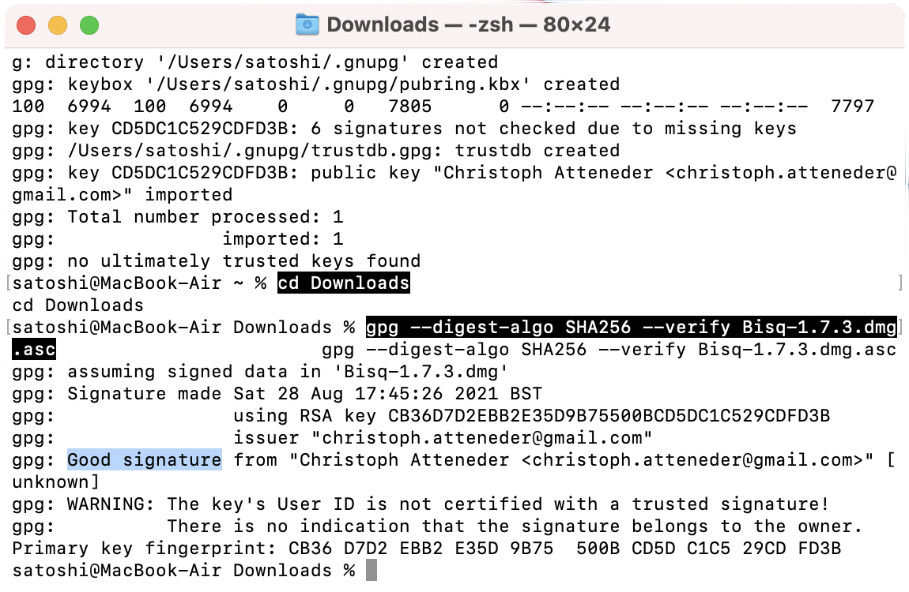If all is well you should get a message similar to the one above, check that the key fingerprint is correct. Congratulations you have verified that the .dmg file you downloaded is authentic and it is safe to open it, and install Bisq.
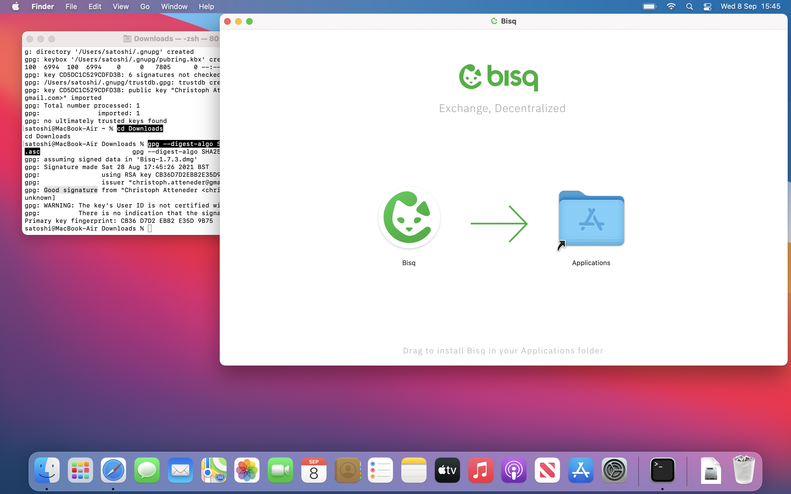If you are using a newer m1 mac when you open bisq for the first time you may be prompted to install Rosetta if you have not done so before. If you get a message:"Bisq" can't be opened because it was not downloaded from the App Store, open system preferences and go to security and privacy and hit open anyway. You have now installed bisq, you can now eject the bisq volume and delete the .dmg and .asc files.


The first time you open Bisq you should be greated by a screen like this
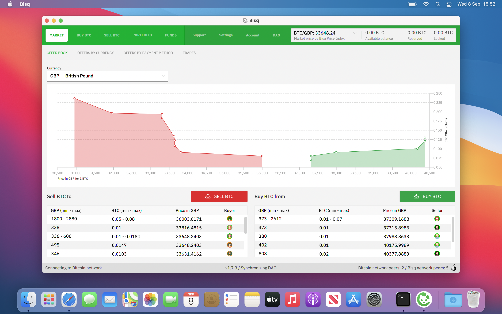Before you make a trade there are several things you should do:
Set a strong password
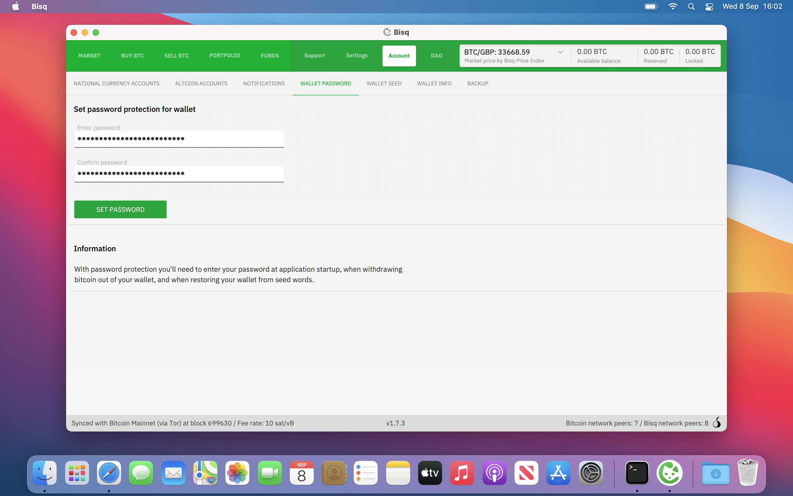Write down your wallets seed words, these words give access to any funds in your Bisq wallet so keep it secure
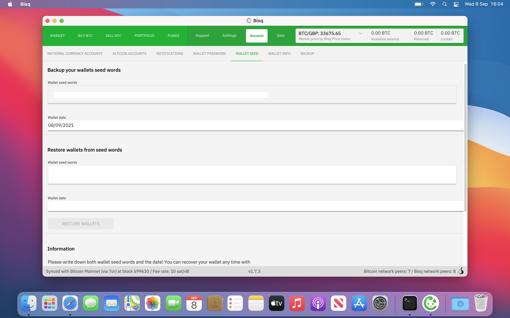Create a payment account (faster payments is a popular payment method in the uk)
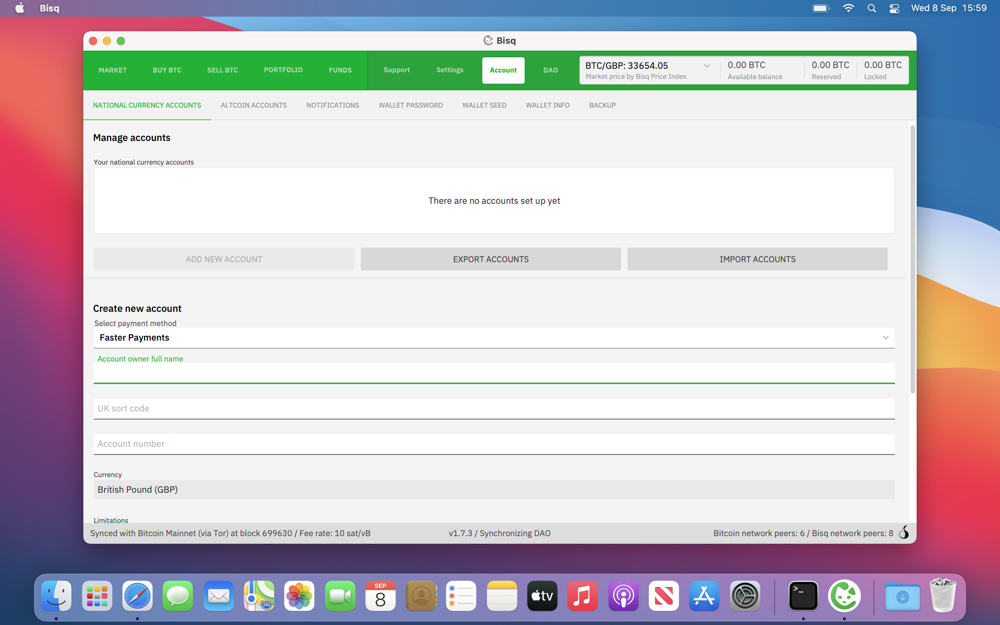Backup Bisq, this should be done regularly
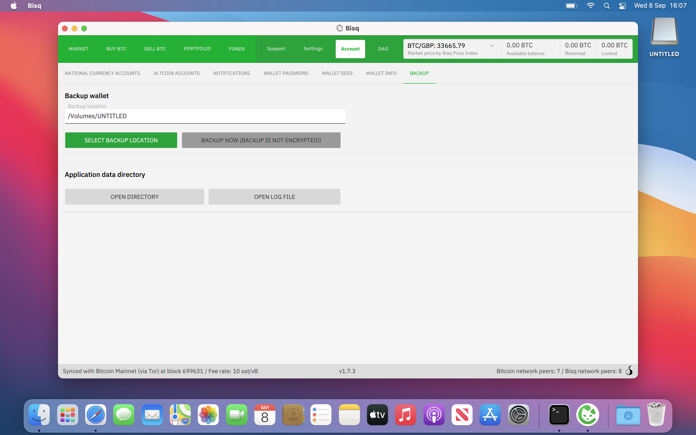You are now ready to make a trade, you can either take an existing offer or create a new offer, the maker fees are 0.1% and the taker fees are 0.7%. When creating an offer you can set a percentage to deviate from the current market price, so it often pays to be patient and create your own offer.
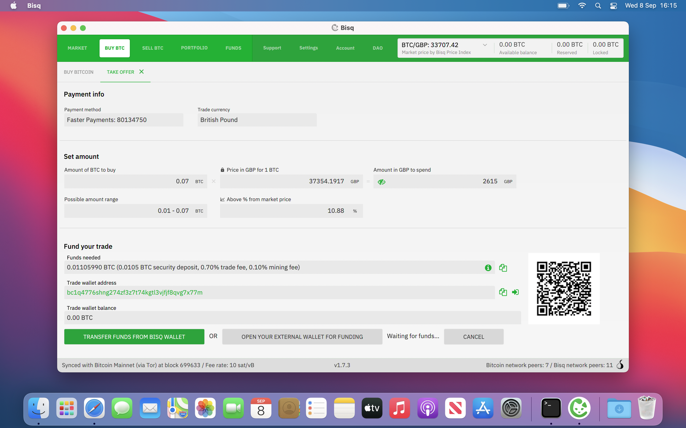As you can see from the images above you need to "Fund your offer", this is to pay for the trading fee and the security deposit (more on this later). This is awkward as you need bitcoin to be able to buy bitcoin, you could buy some bitcoin off a friend or use a bitcoin atm.